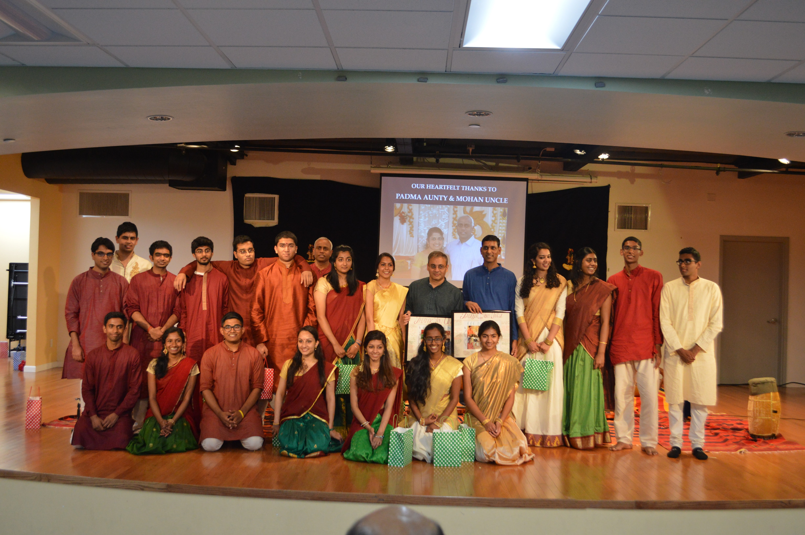

Carnatic Chamber
Concerts
Concerts
Promoting Carnatic music in the Bay Area

About Us
Mission Statement: Foster musical talent in youth with a supportive platform and positive environment
Mission Statement: Foster musical talent in youth with a supportive platform and positive environment
Carnatic Chamber Concerts (aka CCC) is based in the San Francisco Bay Area. CCC, founded in December 2008 is dedicated to promoting classical South Indian Carnatic music and provide opportunities for youth musicians to grow. Our first concert was on January 1st 2009 and the group has been having concerts and since then we have held over 40+ concerts. CCC currently supports over 150+ members from music schools across the bay area. We are always looking for new students to support, so if you are interested, please sign up!
Milestones
December 2008: CCC was founded and had its first event
October 2010: First anniversary showcase in Sai Mandir
March 2011: First place in Cleveland Thyagaraja Festival
January 2014: 5 year event, reached over 100 members
June 2016: Alumni Showcase event with graduating seniors
Events
Cleveland Carnatic Competition
JAM Session
December Monthly Performance
Audio Setup Workshop
Teacher Talks
April 2017: This annual competition features Carnatic talent from all over the US. Our CCC students have won numberous awards at this national competition
Monthly: In an effort to foster collaboration among peers, we set up JAM sessions for our students. This way, our young musicians can learn outside the classroom and get out of their comfort zone.
Monthly: Our flagship event is a performance that features 6-8 up and coming vocalists as well as several accompanists who strive to gain experience on the stage.
Have you felt that you wanted to give back to CCC, but didn't know how? Come to our Audio Setup Workshops, and you can learn how to help set up audio equipment for all of our events
Our feature-a-guru section is our newest regular event in which one teacher in our community shares their insight, experiences, and knowledge about Carnatic music.
Artists
Vocalists
Vocalist 1
Vocalist 2
Vocalist 3
Vocalist 4
Instrumental
Instrumental 1

Instrumental 2

Instrumental 3
Instrumental 4
Percussion
Percussion 1
Percussion 2
Percussion 3
Percussion 4
Designed and Developed by Nitin Sampath
Thank you for signing up